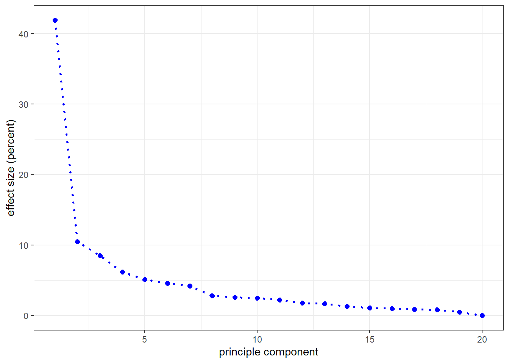

Chapter 2 Differentiation of populations using PCA
2.1 Introduction
Principle component analysis (PCA) is one of several methods for differentiating populations through molecular markers. At its most basic level it is a rapid an easy analysis to perform. Here, individuals from two fish populations are assessed using a low density, single nucleotide polymorphism (SNP) panel. PCA is explored in the context of developing methods for classifying individuals based only on molecular analysis.
2.2 Background on the fish populations
A population of haplotypes is first made From the haplotypes, two populations are formed, A and B The populations are managed at two different hatcheries Hatchery A maintains a large effective population size throughout 10 generations Hatchery B, a much smaller effective population size also for 10 generations Inbreeding and genetic drift increase the homozygocity of population B We will use principle component analysis to try and differentiate the populations at each generation
pop_haplos <- quickHaplo(nInd = 10, # number of individuals
nChr = 3, # number of chromosomes
segSites = 1000, # number of segregation sites
genLen = 1, # genetic length of chromosomes
ploidy = 2L, # ploidy level of organism
inbred = TRUE) # are founders inbred?
SP = SimParam$new(pop_haplos) # create a variable for new simulation parameters
SP$addTraitA(nQtlPerChr = 100, # number of QTL for trait
mean = 500, # mean genetic value of the trait
var = 100, # variance of trait
corA = NULL, # matrix of correlations between additive effects
gamma = FALSE, # to use a gamma distribution in place of a normal distribution
shape = 1, # shape parameter for gamma distribution only
force = FALSE) # keep false until this is understood!
SP$setVarE(h2 = 0.3, # vector of narrow sense heritability
H2 = NULL, # vector of broad sense heritability
varE = NULL) # vector of error variances
SP$addSnpChip(nSnpPerChr = 32, # number of SNPs per chromosome
minSnpFreq = NULL, # minimum allowable frequency for SNP loci
refPop = NULL) # reference population for calculating SNP frequencygen <- 10 # specify the number of generations for which selection will be carried out
#__ 3.1 Develop population A #####
pop_A <- newPop(rawPop = pop_haplos, # object of MapPop-class
mother = NULL, # optional id for mothers
father = NULL, # optional id for fathers
origM = NULL, # optional alternative id for mothers
origF = NULL, # optional alternative id for fathers
isDH = FALSE, # indicate if double haploids and/or inbred
simParam = SP) # SimParam objects
POP_A <- vector(length = gen, mode = "list") # create a vector of lists to store the population for each generation
POP_A[[1]] <- pop_A # add the founder population to the vector of lists
for (i in 2:gen) {
POP_A[[i]] <- randCross(pop = POP_A[[i - 1]],
nCrosses = 10,
nProgeny = 1,
balance = TRUE,
parents = NULL,
simParam = SP)}2.3 SNP results
SNP results are returned as a data matrix of m rows and n columns. Each row is an individual fish and each column is a different SNP. 10 individuals from each hatchery were assessed so m = 20 observations exist. The low density SNP panel consists of 96 SNP so n = 96 variables exist. For each individual, each SNP is assessed as 0, 1, or 2 where 0 equates to homzygous recessive, 1 to heterozygous, and 2 to homozygous dominant. It is important to note that the terms recessive and dominant do not necessarily correspond with the genetic definitions of these terms. In the case of an SNP panel, they correspond with the allele-by-reporter dye combination chosen during assay development.
The first few rows and columns of the SNP results are shown. Note that the matrix contains only data and that fish IDs and SNP IDs exist only as row and column names. This is clear evidence that PCA analysis incorporates no prior knowledge of population origin and relies completely on genotypic data.
c_gen <- 10 # specify the generation at which PCA will be performed
snp_A <- pullSnpGeno(pop = POP_A[[c_gen]], # Pop-class object
snpChip = 1, # which chip to use
chr = NULL, # chromosome number, NULL = all
simParam = SP) # SimParam object
snp_B <- pullSnpGeno(pop = POP_B[[c_gen]], # Pop-class object
snpChip = 1, # which chip to use
chr = NULL, # chromosome number, NULL = all
simParam = SP) # SimParam object
snp_pops <- rbind(snp_A, snp_B)
kable(snp_pops[1:20, 1:12])| SNP_1 | SNP_2 | SNP_3 | SNP_4 | SNP_5 | SNP_6 | SNP_7 | SNP_8 | SNP_9 | SNP_10 | SNP_11 | SNP_12 | |
|---|---|---|---|---|---|---|---|---|---|---|---|---|
| 91 | 0 | 1 | 1 | 0 | 1 | 1 | 1 | 2 | 2 | 2 | 0 | 0 |
| 92 | 0 | 1 | 2 | 0 | 1 | 1 | 0 | 2 | 1 | 1 | 0 | 0 |
| 93 | 0 | 2 | 2 | 0 | 0 | 2 | 1 | 2 | 1 | 2 | 0 | 0 |
| 94 | 0 | 1 | 2 | 1 | 2 | 1 | 1 | 2 | 1 | 2 | 0 | 0 |
| 95 | 0 | 0 | 2 | 0 | 2 | 1 | 1 | 2 | 0 | 1 | 0 | 0 |
| 96 | 0 | 1 | 2 | 1 | 2 | 1 | 1 | 2 | 1 | 2 | 0 | 0 |
| 97 | 0 | 1 | 1 | 0 | 1 | 1 | 2 | 2 | 1 | 2 | 0 | 0 |
| 98 | 0 | 0 | 2 | 0 | 2 | 0 | 1 | 2 | 0 | 1 | 0 | 0 |
| 99 | 0 | 1 | 1 | 0 | 1 | 1 | 2 | 2 | 0 | 2 | 0 | 0 |
| 100 | 0 | 0 | 1 | 0 | 2 | 0 | 1 | 2 | 1 | 2 | 0 | 0 |
| 191 | 0 | 0 | 2 | 0 | 0 | 0 | 2 | 1 | 1 | 1 | 0 | 1 |
| 192 | 0 | 0 | 2 | 0 | 0 | 0 | 2 | 1 | 1 | 1 | 0 | 1 |
| 193 | 0 | 1 | 2 | 1 | 1 | 1 | 2 | 1 | 1 | 0 | 0 | 1 |
| 194 | 0 | 1 | 2 | 1 | 1 | 1 | 2 | 1 | 1 | 0 | 0 | 1 |
| 195 | 0 | 0 | 2 | 0 | 0 | 0 | 2 | 2 | 0 | 2 | 0 | 0 |
| 196 | 0 | 1 | 2 | 1 | 1 | 1 | 2 | 0 | 2 | 0 | 0 | 2 |
| 197 | 0 | 0 | 2 | 0 | 0 | 0 | 2 | 0 | 2 | 0 | 0 | 2 |
| 198 | 0 | 0 | 2 | 0 | 0 | 0 | 2 | 1 | 1 | 1 | 0 | 1 |
| 199 | 0 | 1 | 2 | 1 | 1 | 1 | 2 | 1 | 1 | 1 | 0 | 1 |
| 200 | 0 | 1 | 2 | 1 | 1 | 1 | 2 | 1 | 1 | 1 | 0 | 1 |
2.4 PCA analysis
The fish x SNP data matrix can be analyzed directly using the function prcomp(). When performing PCA with numeric variables such as gene expression it is common to normalize them by adding scale = TRUE. Despite being in numerical form, the measures of genotype from the SNP are really categorical. Nonetheless, for the purpose of PCA they exist as integers already scaled from 0 to 2. For this reason, the default scale = FALSE is used.
The function prcomp() produces a list of 5 output categories, of which $x and $sdev are used in the downstream analysis here. $x is a data matrix of m rows and n columns. Rows correspond to the number of SNP such that m = 96 observations exist. Columns correspond to principle components which although derived through analysis also corresponds to the number of SNP such that n = 96 variables.
2.5 Assessment of the principle components
The following code compiles a data frame of principle component effects. A vector of principle component IDs is first made as p_comp. The number of principle components is always equal to the number of subjects, 20 fish in our case. The vector was made simply as 1 to subject number using number of columns from the pca$x matrix. Although column number was used because each column represents one principle component in pca$x, row number which equates to subjects could just as easily be used. After the principle component IDs were called, the standard deviation of the principle components was called as pca$sd. Squaring the standard deviations resulted in pca_var, the variance of the principle components. Due to the ‘additive’ nature of variance, the percent of the total variance could then be calculated for each of the principle components. Finally, the individual vectors were assembled into a data frame and the first few lines shown.
p_comp <- 1:dim(pca$x)[2] # create a vector pf principle component IDs
pca_sd <- pca$sdev # call the standard deviation from the PCA results
pca_var <- pca_sd^2 # calculate the variance of the principle components
pca_var_per <- round(pca_var / sum(pca_var) * 100, 1) # calculate the percent variance of the total variance for each principle component
df_p_comp <- data.frame(p_comp,
pca_sd,
pca_var,
pca_var_per)
kable(head(df_p_comp))| p_comp | pca_sd | pca_var | pca_var_per |
|---|---|---|---|
| 1 | 4.473026 | 20.007965 | 43.5 |
| 2 | 2.030738 | 4.123899 | 9.0 |
| 3 | 1.854764 | 3.440148 | 7.5 |
| 4 | 1.719828 | 2.957808 | 6.4 |
| 5 | 1.693977 | 2.869558 | 6.2 |
| 6 | 1.359560 | 1.848404 | 4.0 |
It is a good idea to look at all principle components together in a figure. This can easily be performed through a scree plot. Scree plots are generally presented as line or bar graphs in the form of percent variation as a function of principle component. As per the analysis, the principle components on the x-axis are ordered from the most-to-least influential.
df_p_comp %>%
ggplot(aes(x = p_comp, y = pca_var_per)) +
geom_point(stat = 'identity', color = "blue", size = 2) +
geom_line(linetype = "dotted", color = "blue", size = 1) +
theme_bw() +
xlab("principle component") +
ylab("effect size (percent)")
2.6 PCA graphical analysis
The primary goal of PCA is to reduce the number of independent variables (SNP in our case) needed to differentiate between dependent factors (individuals and their populations in our case)
In the receding figure we see that by generation 10 there is a pretty clear separation of the two hatchery populations. Our next task is to understand the relative effects of the principle components, and then the relative effects of the SNPs within the most influential principle components. In our example we might find that only a few SNP, rather than a low density chip, are all that is needed to differentiate our populations. It would also be a first step in a functional characterization of the genetic differences between the two populations.
pca.data %>%
ggplot(aes(x = X, y = Y, label = fish_ID)) +
geom_text(size = 3, color = "black") +
geom_point(aes(color = hatchery), size = 8, alpha = 0.5) +
xlab(paste("PC1 - ", pca_var_per[1], "%", sep="")) +
ylab(paste("PC2 - ", pca_var_per[2], "%", sep="")) +
scale_color_manual(values = c("A" = "blue", "B" = "grey")) +
theme_bw() +
ggtitle(paste("generation", c_gen, sep = " "))